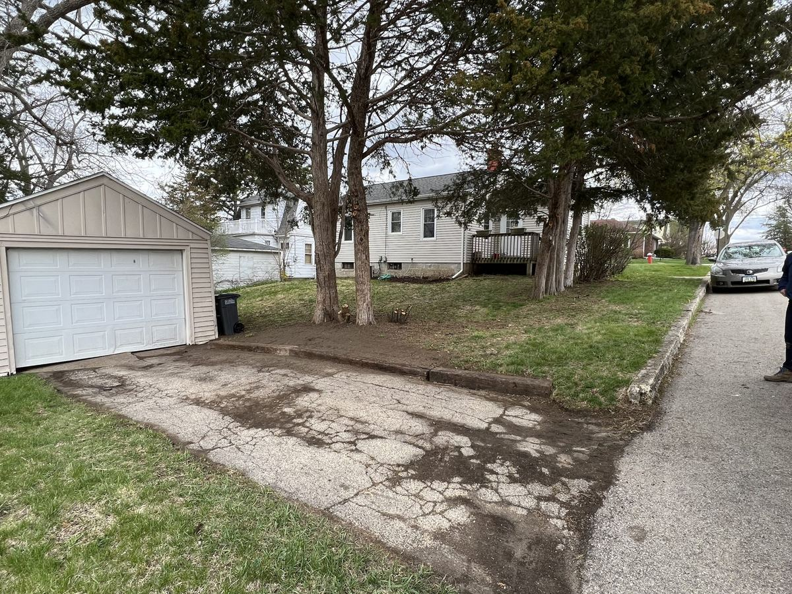

Fix the grade first — sod that lays flat and water that actually drains away from the house.
A soggy yard is almost never a sod problem — it's a grading problem. New View reads the slope of the property first, fixes low spots and drainage paths, then lays sod on top of ground that's actually ready for it.
New sod installs, regrading around a new install or addition, and drainage fixes for yards that pool near the foundation.
Water that pools within a few feet of the foundation isn't just an eyesore, it's a long-term risk to the foundation itself, and we treat that kind of drainage issue as a priority rather than a someday project. In most cases the fix is a regrade that gives water somewhere to actually go. When the slope alone can't solve it (a low spot boxed in by hardscape or property lines), a French drain routes water underground to a real outlet instead.
New sod establishes best when it's watered consistently for the first two to three weeks, more than most people expect going in. Spring and early fall are the strongest windows for sod in Dubuque's climate, since the ground temperature supports root establishment without the stress of peak summer heat. We'll walk you through the watering schedule for your specific install before we leave the job.

Spring and early fall are the strongest windows, the ground temperature helps roots establish without the stress of peak summer heat. Summer installs are possible but need more careful watering.
Give it about two to three weeks of consistent watering before regular foot traffic. Light use sooner is usually fine, just avoid heavy activity until the roots have taken hold.
In the vast majority of cases it's the grading, not the grass, water has nowhere to drain to. We diagnose the actual slope before recommending a fix rather than just re-sodding the same low spot.
A full plan for your yard, then a crew that installs it right the first time.
Learn more →Walls that hold — built with proper base and drainage, not just stacked block.
Learn more →Paver patios, walkways and fire pits — laid on a base built to stay flat.
Learn more →Free estimates. Call or send details and Dallas will get back to you.